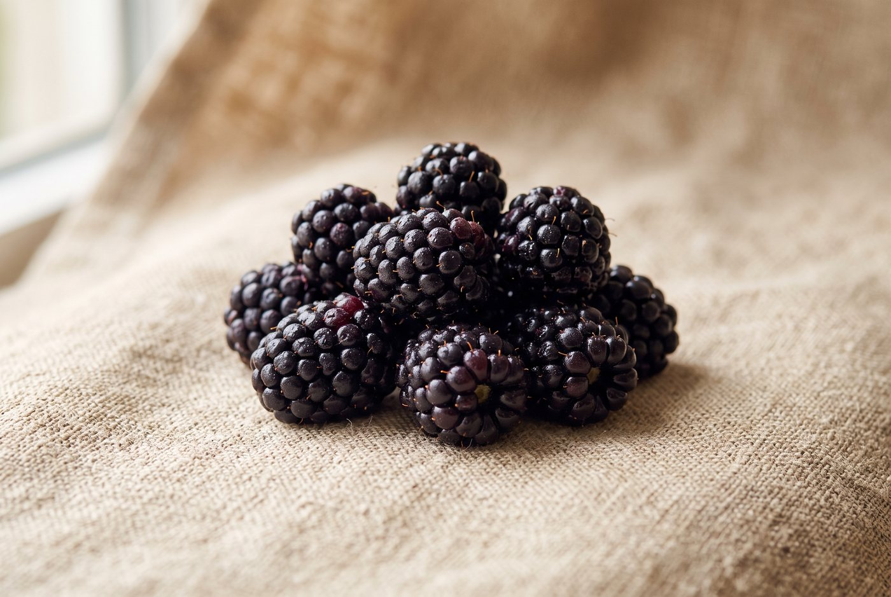

Pre-Order · Spring 2027

Ouachita
Mid-seasonRubus 'Ouachita' — Univ. of Arkansas, 2003
Mid-season. Large fruit (typically 6–7 g), excellent post-harvest firmness, very high yield potential on erect, trellis-optional canes. Among the most-planted blackberries in the Southeast.
72-cell liner tray
Stage III acclimated
1 tray minimum
Docs included